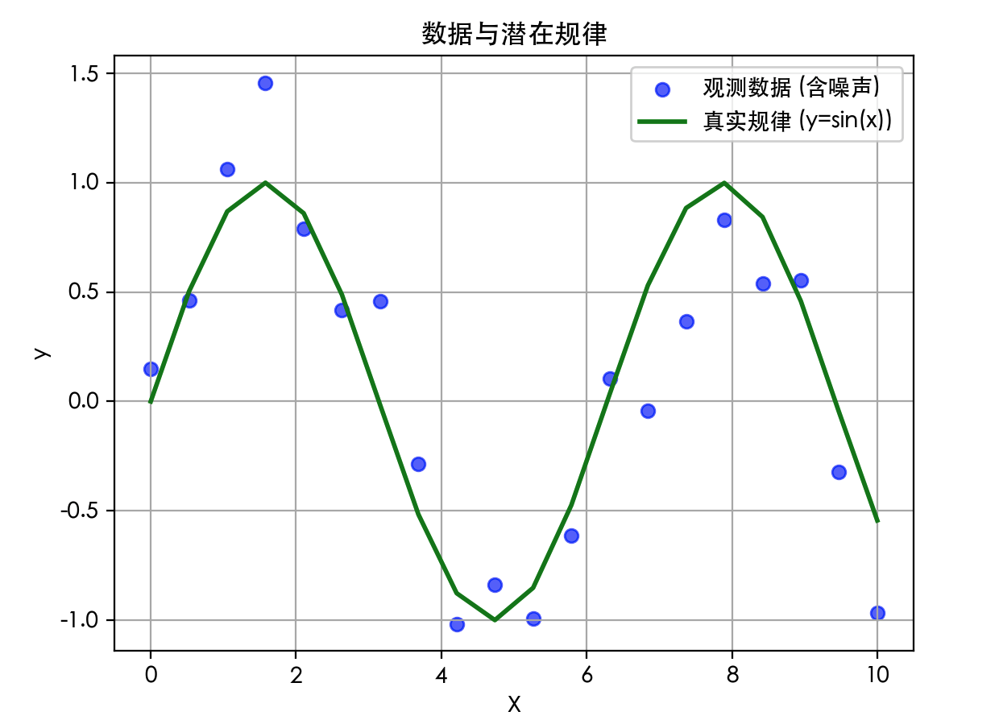
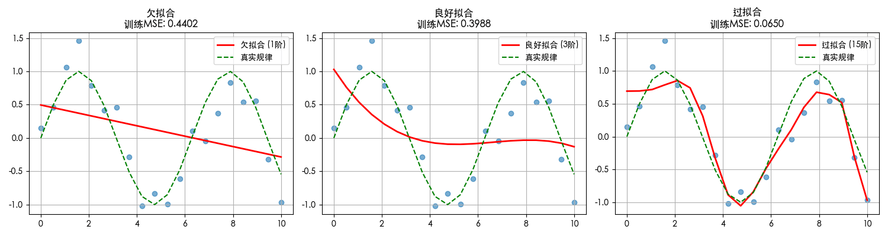
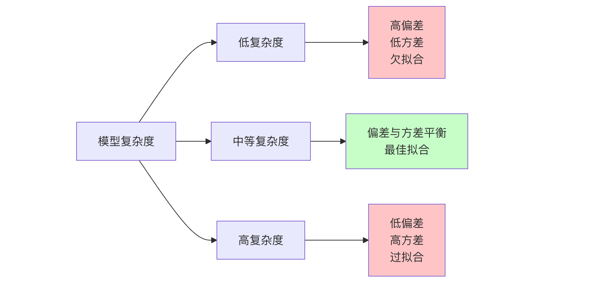
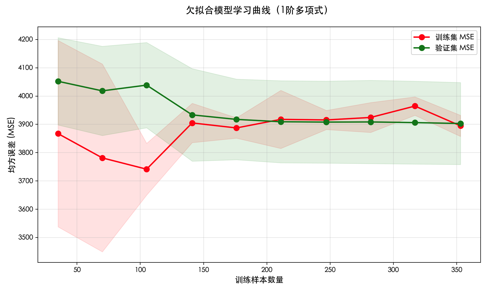
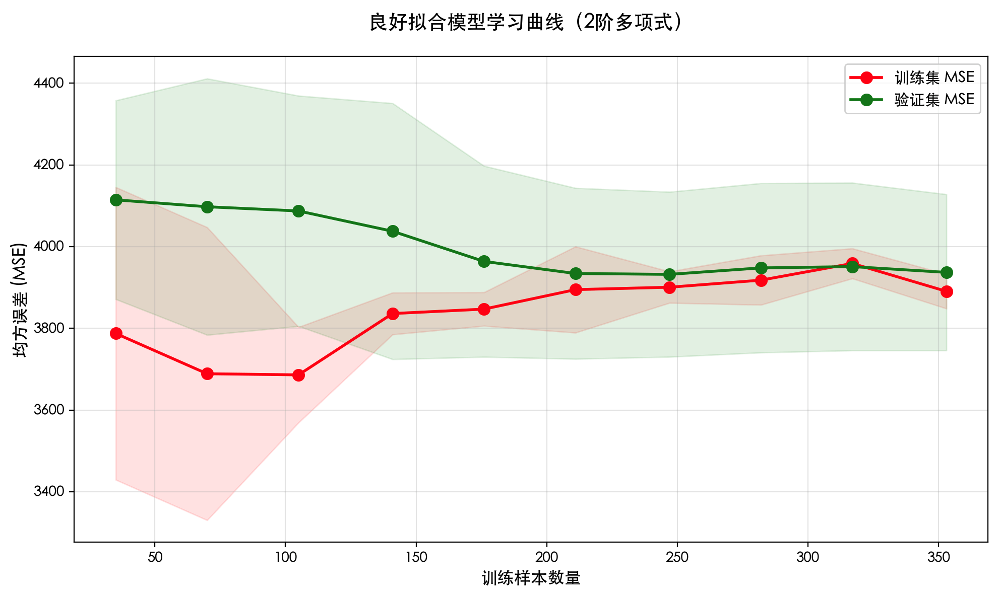
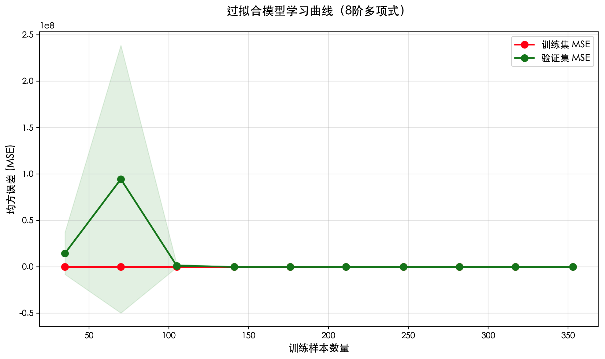
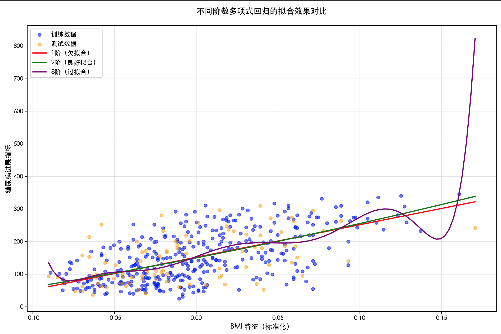
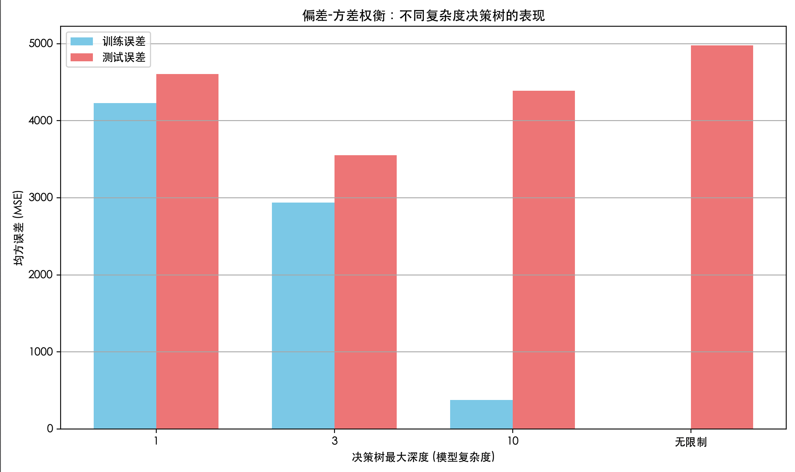

過学習、未学習、バイアスとバリアンス
機械学習の世界では、モデルを構築することは一人の学生を育てるようなものです。私たちの目標は、この学生が教科書の例題（トレーニングデータ）を覚えるだけでなく、その背後にある原理を深く理解し、まったく見たことのない新しい試験問題（テストデータ）でも良い成績を取れるようにすることです。しかし、この学生は学習の過程で、次のような2つの典型的な問題に直面することがあります。
- 1つは、学び方があまりにも硬直的で、例題を機械的に当てはめるだけの場合です（未学習）；
- もう1つは、賢すぎて例題の句読点や筆跡の特徴まで暗記してしまい、新しい問題に直面したときに対処できなくなる場合です（過学習）。
理解すること過学習 与 未学習、およびその背後にあるより深い理論的概念——バイアス 与 バリアンス、それは機械学習の実践者全員が初心者から熟達者へと進むための重要な一歩です。これらはモデルがなぜ誤りを犯すのかを説明し、モデル改善の方向性を示してくれます。
一、中核コンセプト：モデルの性能と「フィッティング」状態
まず、直感的な例を通して「フィッティング」とは何かを理解しましょう。仮に、ある数学モデルを使って一群の散布データをフィッティングしたいとします。
実例
import matplotlib.pyplot as plt
# -------------------------- 中国語フォント設定 start --------------------------
plt.rcParams['font.sans-serif'] = [
# Windows 優先
'SimHei', 'Microsoft YaHei',
# macOS 優先
'PingFang SC', 'Heiti TC',
# Linux 優先
'WenQuanYi Micro Hei', 'DejaVu Sans'
]
# マイナス記号が四角く表示される問題を修正
plt.rcParams['axes.unicode_minus'] = False
# -------------------------- 中国語フォント設定 end --------------------------
# シミュレーションデータを生成：正弦曲線にランダムノイズを加える
np.random.seed(42)
X = np.linspace(0, 10, 20)
y_true = np.sin(X) # 真の潜在的な規則（私たちは知らない）
y_noise = np.random.randn(20) * 0.3 # ランダムノイズ
y = y_true + y_noise # 私たちが実際に観測したデータ
plt.scatter(X, y, label='観測データ (ノイズ含む)', color='blue', alpha=0.6)
plt.plot(X, y_true, label='真の規則 (y=sin(x))', color='green', linewidth=2)
plt.xlabel('X')
plt.ylabel('y')
plt.title('データと潜在的な規則')
plt.legend()
plt.grid(True)
plt.show()
私たちの目標は、これらの青い散布点（データ）が反映する規則を最もよく説明できる曲線（モデル）を見つけることです。
モデルがデータをどの程度説明しているかが、フィッティング。

1. 未学習
未学習とは、モデルが単純すぎて、データ内の基本的な規則やパターンを捉えられないことです。まるで、足し算しか学んでいない学生が微分積分の問題を解こうとするようなものです。
- 特徴：モデルがトレーニングデータ上での性能がすでに低い（例えば、精度が低く、誤差が大きい）。
- 原因：モデルの複雑さが低すぎる、特徴が不十分、または訓練が不十分。
- たとえ：明らかに曲がる傾向のあるデータを直線（1次多項式）でフィッティングする。
実例
from sklearn.preprocessing import PolynomialFeatures
from sklearn.metrics import mean_squared_error
# 1次多項式（直線）でのフィッティングを試みる
poly = PolynomialFeatures(degree=1)
X_poly1 = poly.fit_transform(X.reshape(-1, 1))
model_under = LinearRegression()
model_under.fit(X_poly1, y)
y_pred_under = model_under.predict(X_poly1)
mse_train_under = mean_squared_error(y, y_pred_under)
print(f"未学習モデルのトレーニングセットにおける平均二乗誤差 (MSE): {mse_train_under:.4f}")
出力：
欠拟合模型在训练集上的均方误差 (MSE): 0.4402 欠拟合模型在训练集上的均方误差 (MSE): 0.4402
2. ちょうどよいフィッティング
これが理想的な状態です。モデルはデータ内の重要なパターンを学習できるほど複雑でありながら、ランダムノイズまで学習するほど複雑ではありません。トレーニングセットと未知のテストセットの両方で良好な性能を発揮します。
- 特徴：トレーニングセットとテストセットの両方で誤差が低く、かつ両者が近い。
- たとえ：適切な次数の多項式（例えば3次）を使ってデータをフィッティングする。
実例
poly = PolynomialFeatures(degree=3)
X_poly3 = poly.fit_transform(X.reshape(-1, 1))
model_good = LinearRegression()
model_good.fit(X_poly3, y)
y_pred_good = model_good.predict(X_poly3)
mse_train_good = mean_squared_error(y, y_pred_good)
print(f"良好なフィッティングモデルのトレーニングセットにおける平均二乗誤差 (MSE): {mse_train_good:.4f}")
出力：
欠拟合模型在训练集上的均方误差 (MSE): 0.4402 良好拟合模型在训练集上的均方误差 (MSE): 0.3988
3. 過学習
過学習とは、モデルが複雑すぎて、データ内の真の規則を学習するだけでなく、トレーニングデータ内のランダムノイズや異常値まで「記憶」してしまうことです。
- 特徴：モデルがトレーニングデータ上では極めて良い性能（誤差が極小）だが、新しい、未見のデータ上では性能が急激に低下し、汎化能力が低い。
- 原因：モデルの複雑さが高すぎる、トレーニングデータの量が少なすぎる。
- たとえ：非常に高次の多項式（例えば15次）を使ってデータをフィッティングし、曲線がほぼすべてのデータ点を通るため、極端に歪んでしまう。
実例
import matplotlib.pyplot as plt
from sklearn.linear_model import LinearRegression
from sklearn.preprocessing import PolynomialFeatures
from sklearn.metrics import mean_squared_error
# -------------------------- 中国語フォント設定 start --------------------------
plt.rcParams['font.sans-serif'] = [
# Windows 優先
'SimHei', 'Microsoft YaHei',
# macOS 優先
'PingFang SC', 'Heiti TC',
# Linux 優先
'WenQuanYi Micro Hei', 'DejaVu Sans'
]
# マイナス記号が四角く表示される問題を修正
plt.rcParams['axes.unicode_minus'] = False
# -------------------------- 中国語フォント設定 end --------------------------
# シミュレーションデータを生成：正弦曲線にランダムノイズを加える
np.random.seed(42)
X = np.linspace(0, 10, 20)
y_true = np.sin(X) # 真の潜在的な規則（私たちは知らない）
y_noise = np.random.randn(20) * 0.3 # ランダムノイズ
y = y_true + y_noise # 私たちが実際に観測したデータ
# 1次多項式（直線）でのフィッティングを試みる
poly = PolynomialFeatures(degree=1)
X_poly1 = poly.fit_transform(X.reshape(-1, 1))
model_under = LinearRegression()
model_under.fit(X_poly1, y)
y_pred_under = model_under.predict(X_poly1)
mse_train_under = mean_squared_error(y, y_pred_under)
print(f"未学習モデルのトレーニングセットにおける平均二乗誤差 (MSE): {mse_train_under:.4f}")
# 3次多項式でのフィッティングを試みる
poly = PolynomialFeatures(degree=3)
X_poly3 = poly.fit_transform(X.reshape(-1, 1))
model_good = LinearRegression()
model_good.fit(X_poly3, y)
y_pred_good = model_good.predict(X_poly3)
mse_train_good = mean_squared_error(y, y_pred_good)
print(f"良好なフィッティングモデルのトレーニングセットにおける平均二乗誤差 (MSE): {mse_train_good:.4f}")
# 15次多項式でのフィッティングを試みる（非常に過学習しやすい）
poly = PolynomialFeatures(degree=15)
X_poly15 = poly.fit_transform(X.reshape(-1, 1))
model_over = LinearRegression()
model_over.fit(X_poly15, y)
y_pred_over = model_over.predict(X_poly15)
mse_train_over = mean_squared_error(y, y_pred_over)
print(f"過学習モデルのトレーニングセットにおける平均二乗誤差 (MSE): {mse_train_over:.4f}")
# 3種類のフィッティング状態を可視化
plt.figure(figsize=(15, 4))
# 未学習
plt.subplot(1, 3, 1)
plt.scatter(X, y, alpha=0.6)
plt.plot(X, y_pred_under, color='red', linewidth=2, label='未学習 (1次)')
plt.plot(X, y_true, color='green', linestyle='--', label='真の規則')
plt.title(f'未学習\nトレーニングMSE: {mse_train_under:.4f}')
plt.legend()
plt.grid(True)
# 良好なフィッティング
plt.subplot(1, 3, 2)
plt.scatter(X, y, alpha=0.6)
plt.plot(X, y_pred_good, color='red', linewidth=2, label='良好なフィッティング (3次)')
plt.plot(X, y_true, color='green', linestyle='--', label='真の規則')
plt.title(f'良好なフィッティング\nトレーニングMSE: {mse_train_good:.4f}')
plt.legend()
plt.grid(True)
# 過学習
plt.subplot(1, 3, 3)
plt.scatter(X, y, alpha=0.6)
plt.plot(X, y_pred_over, color='red', linewidth=2, label='過学習 (15次)')
plt.plot(X, y_true, color='green', linestyle='--', label='真の規則')
plt.title(f'過学習\nトレーニングMSE: {mse_train_over:.4f}')
plt.legend()
plt.grid(True)
plt.tight_layout()
plt.show()

図からはっきりとわかること：
- 未学習（左）：赤い直線はデータの変動傾向をまったく捉えられていない。
- 良好なフィッティング（中央）：赤い曲線は緑の真の規則の傾向におおまかに従っている。
- 過学習（右）：赤い曲線は激しく変動し、ノイズ点を含むすべての青い散布点を通ろうとして、正弦曲線の滑らかな形状を完全に失っている。
二、理論の基盤：バイアスとバリアンスの分解
バイアスとバリアンスは、過学習と未学習を理解するための理論的枠組みを提供します。これらはモデルの誤差の2つの異なる源泉を説明します。
モデルの全誤差を次のように分解できます：バイアス² + バリアンス + 削減不可能な誤差。
1. バイアス
- 定義：モデルの予測値の期待値（つまり平均予測値）と真の値との差。これはモデル自体の系統的誤り、すなわちモデルの問題の本質に関する仮定が正しいかどうかを反映します。
- 高バイアスの特徴：モデルが単純すぎて、データの特徴を捉えられず、その結果未学習。どのようなデータで訓練しても、結果は真の値から乖離します。
- 例：常に「住宅価格 = 面積×1000」という単純な線形モデルで様々な家を予測し、立地や階数などの重要な要素を無視している。これが高バイアスです。
2. バリアンス
- 定義：モデルの予測値自体の変動範囲。これはモデルが訓練データ中のランダムノイズに対する感度を反映しています。
- 高分散の現れ：モデルが複雑すぎて、訓練データ内の微小な変化（ノイズを含む）に過剰に反応し、その結果過学習。別のデータセットで訓練すると、得られるモデルがまったく異なる可能性があります。
- 例：ディープニューラルネットワークは、何の制約も設けなければ、それぞれの固有の訓練データに対して、まったく異なる非常に複雑な予測ルールを生成する可能性があります。これが高分散です。
3. バイアス-バリアンスのトレードオフ
これは機械学習における中心的なトレードオフです。バイアスと分散を同時に最小化することはできません。

- モデルの複雑さを増やすと：通常はバイアスを下げられます（モデルの表現力が高まる）が、分散が増えます（ノイズを学習しやすくなる）。
- モデルの複雑さを減らすと：通常は分散を下げられます（モデルがより安定する）が、バイアスが増えます（モデルの表現力が弱くなる）。
私たちの目標は、図中の「最適点」を見つけて、総誤差を最小にすることです。
三、診断と対処戦略
モデルがどの状態にあるかをどう判断するか？どう解決するか？
1. 診断方法：学習曲線
学習曲線は、モデルの訓練セット和検証セット上での性能（誤差など）が、訓練サンプル数或モデルの複雑さに応じて変化する様子をプロットした曲線です。
実例
import matplotlib.pyplot as plt
from sklearn.datasets import load_diabetes
from sklearn.model_selection import train_test_split
from sklearn.model_selection import learning_curve
from sklearn.pipeline import make_pipeline
from sklearn.linear_model import LinearRegression
from sklearn.preprocessing import PolynomialFeatures, StandardScaler
from sklearn.metrics import mean_squared_error
import warnings
warnings.filterwarnings('ignore')
# -------------------------- 中国語フォントの設定 start --------------------------
plt.rcParams['font.sans-serif'] = [
# Windows 優先
'SimHei', 'Microsoft YaHei',
# macOS 優先
'PingFang SC', 'Heiti TC',
# Linux 優先
'WenQuanYi Micro Hei', 'DejaVu Sans'
]
# マイナス記号が四角く表示される問題を修正
plt.rcParams['axes.unicode_minus'] = False
# グラフのスタイルを設定
plt.rcParams['figure.figsize'] = (10, 6)
plt.rcParams['axes.grid'] = True
plt.rcParams['grid.alpha'] = 0.3
# -------------------------- 中国語フォントの設定 end --------------------------
# データをロード
data = load_diabetes()
X, y = data.data, data.target
# 1つの特徴量のみを使用（多項式回帰のデモに最適）
X = X[:, np.newaxis, 2] # 3番目の特徴量（BMI）を選択
X_train, X_test, y_train, y_test = train_test_split(X, y, test_size=0.2, random_state=42)
# 学習曲線の描画関数を定義（最適化版）
def plot_learning_curve(estimator, title, X, y, cv=5, train_sizes=np.linspace(0.1, 1.0, 10)):
"""
学習曲線の描画
パラメータ：
estimator: モデル推定器
title: グラフのタイトル
X: 特徴量データ
y: 目的変数
cv: 交差検証の分割数
train_sizes: 訓練サンプルの割合
"""
# 学習曲線のデータを取得
train_sizes_abs, train_scores, test_scores = learning_curve(
estimator, X, y, cv=cv, scoring='neg_mean_squared_error',
train_sizes=train_sizes, random_state=42, n_jobs=-1
)
# 平均値と標準偏差を計算
train_scores_mean = -train_scores.mean(axis=1)
train_scores_std = train_scores.std(axis=1)
test_scores_mean = -test_scores.mean(axis=1)
test_scores_std = test_scores.std(axis=1)
# 学習曲線を描画
plt.figure(figsize=(10, 6))
plt.fill_between(train_sizes_abs,
train_scores_mean - train_scores_std,
train_scores_mean + train_scores_std,
alpha=0.1, color='r')
plt.fill_between(train_sizes_abs,
test_scores_mean - test_scores_std,
test_scores_mean + test_scores_std,
alpha=0.1, color='g')
# 平均値の曲線を描画
plt.plot(train_sizes_abs, train_scores_mean, 'o-', color='r', linewidth=2,
markersize=8, label='訓練セット MSE')
plt.plot(train_sizes_abs, test_scores_mean, 'o-', color='g', linewidth=2,
markersize=8, label='検証セット MSE')
# グラフの属性を設定
plt.xlabel('訓練サンプル数', fontsize=12)
plt.ylabel('平均二乗誤差 (MSE)', fontsize=12)
plt.title(title, fontsize=14, pad=20)
plt.legend(loc='upper right', fontsize=11)
plt.tight_layout()
plt.show()
# テストセットでのモデルの性能を出力
estimator.fit(X_train, y_train)
y_pred = estimator.predict(X_test)
mse = mean_squared_error(y_test, y_pred)
print(f"{title} - テストセット MSE: {mse:.2f}")
# 1. 未学習モデル（1次多項式 - 線形回帰）
print("="*60)
print("未学習モデル（1次多項式 - 線形回帰）")
print("="*60)
plot_learning_curve(
make_pipeline(StandardScaler(), PolynomialFeatures(1), LinearRegression()),
'未学習モデルの学習曲線（1次多項式）',
X, y
)
# 2. 良好な適合モデル（2次多項式）
print("\n" + "="*60)
print("良好な適合モデル（2次多項式）")
print("="*60)
plot_learning_curve(
make_pipeline(StandardScaler(), PolynomialFeatures(2), LinearRegression()),
'良好な適合モデルの学習曲線（2次多項式）',
X, y
)
# 3. 過学習モデル（8次多項式）
print("\n" + "="*60)
print("過学習モデル（8次多項式）")
print("="*60)
plot_learning_curve(
make_pipeline(StandardScaler(), PolynomialFeatures(8), LinearRegression()),
'過学習モデルの学習曲線（8次多項式）',
X, y
)
# 追加：異なる次数のモデルの適合効果を可視化
plt.figure(figsize=(12, 8))
X_plot = np.linspace(X.min(), X.max(), 100).reshape(-1, 1)
# 元のデータ点を描画
plt.scatter(X_train, y_train, alpha=0.5, label='訓練データ', color='blue', s=30)
plt.scatter(X_test, y_test, alpha=0.5, label='テストデータ', color='orange', s=30)
# 異なる次数の適合曲線を描画
orders = [1, 2, 8]
colors = ['red', 'green', 'purple']
labels = ['1次（未学習）', '2次（良好な適合）', '8次（過学習）']
for i, order in enumerate(orders):
model = make_pipeline(StandardScaler(), PolynomialFeatures(order), LinearRegression())
model.fit(X_train, y_train)
y_plot = model.predict(X_plot)
plt.plot(X_plot, y_plot, color=colors[i], linewidth=2, label=labels[i])
plt.xlabel('BMI 特徴量（標準化）', fontsize=12)
plt.ylabel('糖尿病の進行指標', fontsize=12)
plt.title('異なる次数の多項式回帰の適合効果の比較', fontsize=14, pad=20)
plt.legend(fontsize=11)
plt.tight_layout()
plt.show()




学習曲線をどう解釈するか？
| 適合状態 | 訓練誤差 | 検証誤差 | 曲線の特徴 |
|---|---|---|---|
| 未学習 | 高 | 高 | 2つの曲線はどちらも高く、非常によく接近しており、データを増やしても効果がありません。 |
| 良好な適合 | 低 | 低 | 2つの曲線はどちらも低く、互いに接近しており、バランスの取れた点に達しています。 |
| 過学習 | 非常に低い | 高 | 訓練誤差は非常に低いが、検証誤差は高く、間に明確なギャップがあります。データを増やすと通常は両者が近づきます。 |
2. 対処戦略
診断結果に応じて、異なる戦略を取ることができます：
未学習（高バイアス）の解決：
- モデルの複雑さを増やす：より強力なモデルを使用する（例：線形モデルからツリーモデル、ニューラルネットワークに切り替える）。
- より多くの特徴量を追加する：より意味のある特徴量を探索・構築する。
- 正則化を減らす：正則化（L1、L2など）を使用している場合は、その強度を弱めてみる。
- トレーニング時間を延長する：反復モデル（ニューラルネットワークなど）の場合、より多くのエポックで訓練する。
過学習（高分散）の解決：
- より多くの訓練データを取得する：最も効果的な方法の1つです。
- モデルの複雑さを減らす：より単純なモデルを選択する（例：多項式の次数を下げる、木の深さを減らす、ニューラルネットワークの層数を減らす）。
- 特徴量選択：無関係または冗長な特徴量を除去する。
- 正則化を増やす：
- L1 正則化（Lasso）：スパースな重みを生成しやすく、特徴量選択に使用できます。
- L2 正則化（Ridge）：重みを減衰させ、全ての重みを小さくする傾向があります。
- Dropout（ニューラルネットワーク用）：トレーニング中にランダムに一部のニューロンを「ドロップ」する。
- 早期停止（反復モデル用）：検証セットの誤差が減少しなくなったらトレーニングを停止する。
四、実践演習：実際のデータセットで体験する
古典的なボストン住宅価格データセット（または糖尿病データセット。ボストンデータセットは廃止されたため）で実践してみましょう。
実例
import matplotlib.pyplot as plt
from sklearn.datasets import load_diabetes
from sklearn.model_selection import train_test_split
from sklearn.tree import DecisionTreeRegressor
from sklearn.metrics import mean_squared_error
# -------------------------- 中国語フォントの設定 start --------------------------
plt.rcParams['font.sans-serif'] = [
# Windows 優先
'SimHei', 'Microsoft YaHei',
# macOS 優先
'PingFang SC', 'Heiti TC',
# Linux 優先
'WenQuanYi Micro Hei', 'DejaVu Sans'
]
# マイナス記号が四角く表示される問題を修正
plt.rcParams['axes.unicode_minus'] = False
# -------------------------- 中国語フォントの設定 end --------------------------
# データをロード
data = load_diabetes()
X, y = data.data, data.target
X_train, X_test, y_train, y_test = train_test_split(X, y, test_size=0.2, random_state=42)
# 異なる複雑さの決定木を試す
max_depths = [1, 3, 10, None] # None は深さの制限がないことを示し、木は「純粋」になるまで成長し続ける
train_errors = []
test_errors = []
for depth in max_depths:
model = DecisionTreeRegressor(max_depth=depth, random_state=42)
model.fit(X_train, y_train)
y_train_pred = model.predict(X_train)
y_test_pred = model.predict(X_test)
train_error = mean_squared_error(y_train, y_train_pred)
test_error = mean_squared_error(y_test, y_test_pred)
train_errors.append(train_error)
test_errors.append(test_error)
print(f"木の最大深さ: {depth if depth is not None else '制限なし'}")
print(f" 訓練セット MSE: {train_error:.2f}")
print(f" テストセット MSE: {test_error:.2f}")
print("-" * 30)
# 可視化
plt.figure(figsize=(10, 6))
depths = [str(d) if d else '制限なし' for d in max_depths]
x_index = np.arange(len(depths))
width = 0.35
plt.bar(x_index - width/2, train_errors, width, label='訓練誤差', color='skyblue')
plt.bar(x_index + width/2, test_errors, width, label='テスト誤差', color='lightcoral')
plt.xlabel('決定木の最大深さ（モデルの複雑さ）')
plt.ylabel('平均二乗誤差 (MSE)')
plt.title('バイアス-分散トレードオフ：異なる複雑さの決定木の性能')
plt.xticks(x_index, depths)
plt.legend()
plt.grid(True, axis='y')
plt.tight_layout()
plt.show()

分析結果：
- 深さ=1：モデルが非常に単純で、訓練誤差とテスト誤差の両方が高い ->高バイアス、未学習。
- 深さ=3：モデル複雑度が増加すると、2つの誤差がともに顕著に減少し、比較的近いバイアスとバリアンスのバランス、良好な適合。
- 深さ=10 または 無制限：モデルが非常に複雑で、トレーニング誤差は極めて低いが、テスト誤差が上昇し始める（またはトレーニング誤差よりはるかに高い）高バリアンス、過学習。
まとめ
過学習、未学習、バイアスとバリアンスを理解することは、優れた機械学習モデルを構築するための基盤です。この核心的なサイクルを覚えておきましょう：
- モデルを訓練する -> トレーニングセットと検証セットでの性能を評価する。
- 学習曲線または誤差の比較を通じて問題を診断する：高バイアス（未学習）か、高バリアンス（過学習）か？
- 対応する戦略を適用する（複雑度/データの追加、正則化など）によって改善する。
- ステップ1に戻る、検証セットで満足のいく、汎化能力の高いモデルが得られるまで。
クリックしてノートを共有
<p style="font-size:14px;">ノートはこの記事の内容の拡張である必要があります！</p><br> <p style="font-size:12px;"><a href="../tougao.html" target="_blank">記事の投稿は、ここをクリックしてください</a></p> <p style="font-size:14px;"><a href="../w3cnote/runoob-user-test-intro.html" target="_blank">登録招待コードの取得方法</a></p> <h3 class="text-muted"><i class="fa fa-info-circle" aria-hidden="true"></i> ノートを共有する前に必ず<a href=";.html" class="runoob-pop">ログイン</a>！</h3> <p><a href="../w3cnote/runoob-user-test-intro.html" target="_blank">登録招待コードの取得方法</a></p>